Welcome to my Website
This website contents infromation about Indian Ancient Scientists and their contribution to the Sience and Technology.
One of the oldest civilizations in the world, the Indian civilization has a strong tradition of science and technology. Ancient India was a land of sages and seers as well as a land of scholars and scientists. Research has shown that from making the best steel in the world to teaching the world to count, India was actively contributing to the field of science and technology centuries long before modern laboratories were set up. Many theories and techniques discovered by the ancient Indians have created and strengthened the fundamentals of modern science and technology. While some of these groundbreaking contributions have been acknowledged, some are still unknown to most.
Here is a list of contributions, made by ancient Indians to the world of science and technology, that will make you feel proud to be an Indian.
The Idea of Zero
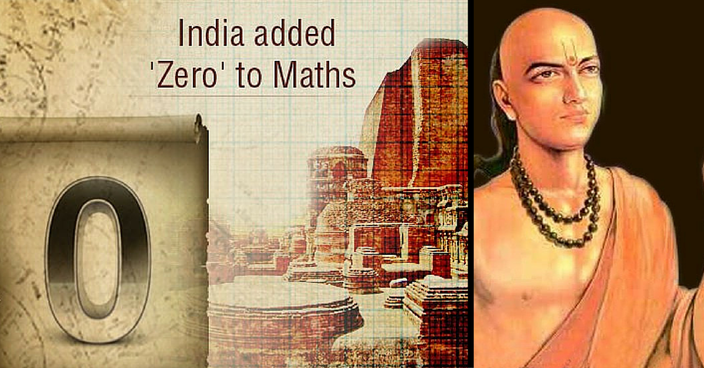Little needs to be written about the mathematical digit ‘zero’, one of the most important inventions of all time. Mathematician Aryabhata was the first person to create a symbol for zero and it was through his efforts that mathematical operations like addition and subtraction started using the digit, zero. The concept of zero and its integration into the place-value system also enabled one to write numbers, no matter how large, by using only ten symbols.
The Decimal System
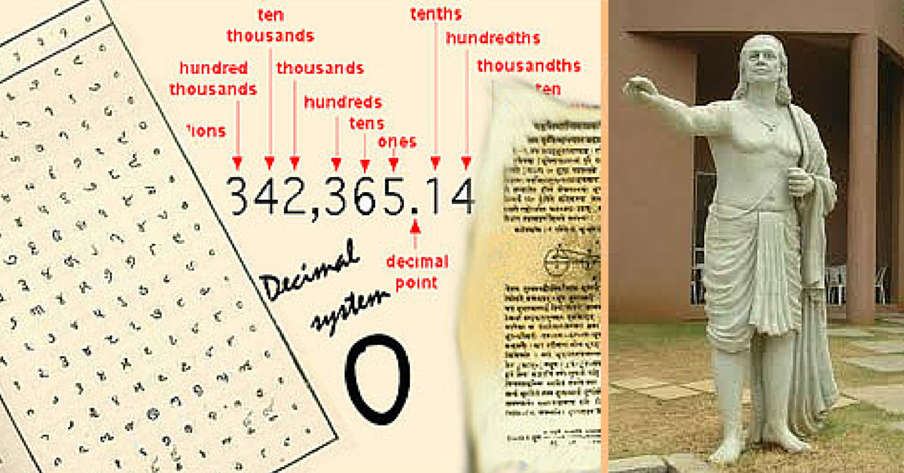India gave the ingenious method of expressing all numbers by means of ten symbols – the decimal system. In this system, each symbol received a value of position as well as an absolute value. Due to the simplicity of the decimal notation, which facilitated calculation, this system made the uses of arithmetic in practical inventions much faster and easier.
Numeral Notations
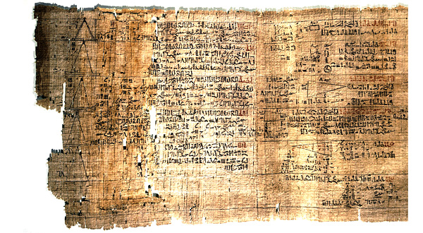Indians, as early as 500 BCE, had devised a system of different symbols for every number from one to nine. This notation system was adopted by the Arabs who called it the hind numerals. Centuries later, this notation system was adopted by the western world who called them the Arabic numerals as it reached them through the Arab traders.
Fibbonacci Numbers

The Fibonacci numbers and their sequence first appear in Indian mathematics as mātrāmeru, mentioned by Pingala in connection with the Sanskrit tradition of prosody. Later on, the methods for the formation of these numbers were given by mathematicians Virahanka, Gopala and Hemacandra , much before the Italian mathematician Fibonacci introduced the fascinating sequence to Western European mathematics.
Binary Numbers
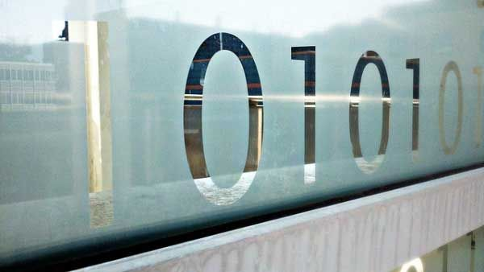Binary numbers is the basic language in which computer programs are written. Binary basically refers to a set of two numbers, 1 and 0, the combinations of which are called bits and bytes. The binary number system was first described by the Vedic scholar Pingala, in his book Chandahśāstra, which is the earliest known Sanskrit treatise on prosody ( the study of poetic metres and verse).
Chakravala method of Algorithms
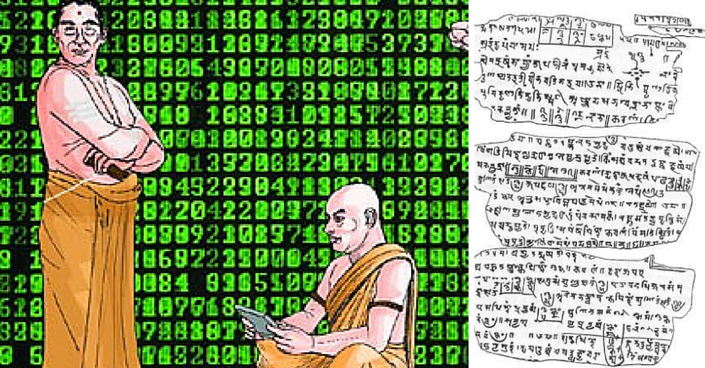The chakravala method is a cyclic algorithm to solve indeterminate quadratic equations, including the Pell’s equation. This method for obtaining integer solutions was developed by Brahmagupta, one of the well known mathematicians of the 7th century CE. Another mathematician, Jayadeva later generalized this method for a wider range of equations, which was further refined by Bhāskara II in his Bijaganita treatise.
Ruler Measurements
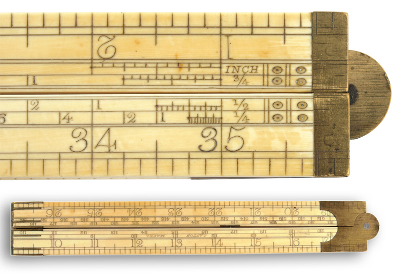Excavations at Harappans sites have yielded rulers or linear measures made from ivory and shell. Marked out in minute subdivisions with amazing accuracy, the calibrations correspond closely with the hasta increments of 1 3/8 inches, traditionally used in the ancient architecture of South India. Ancient bricks found at the excavation sites have dimensions that correspond to the units on these rulers.
A Theory of Atom
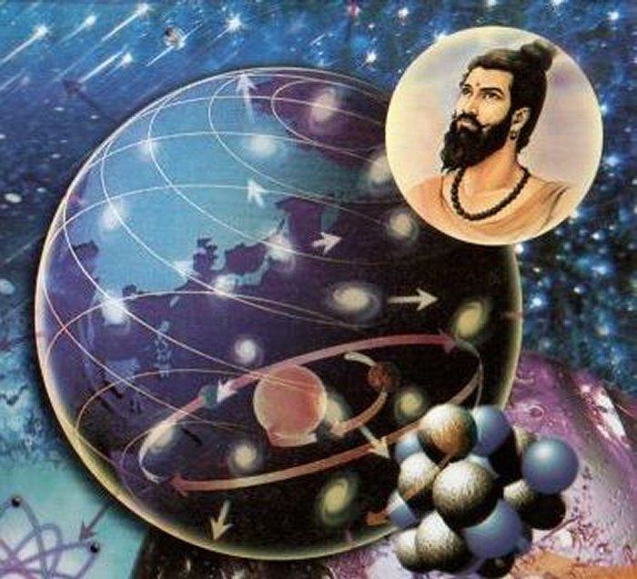One of the notable scientists of the ancient India was Kanad who is said to have devised the atomic theory centuries before John Dalton was born. He speculated the existence of anu or a small indestructible particles, much like an atom. He also stated that anu can have two states — absolute rest and a state of motion. He further held that atoms of same substance combined with each other in a specific and synchronized manner to produce dvyanuka (diatomic molecules) and tryanuka (triatomic molecules).
The Heliocentric Theory
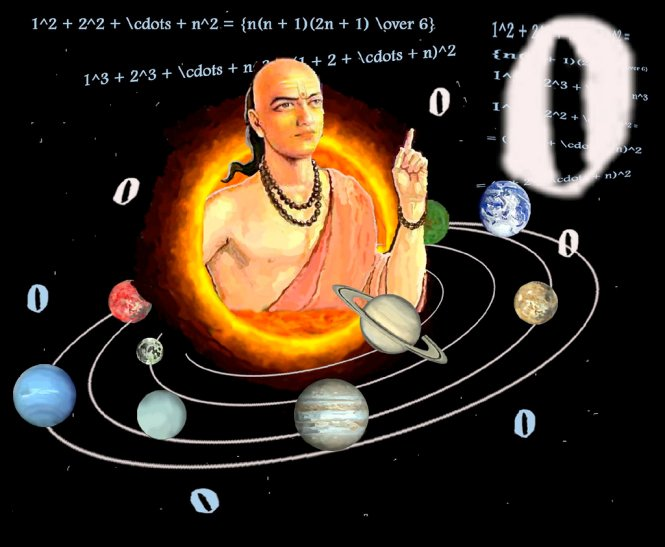Mathematicians of ancient India often applied their mathematical knowledge to make accurate astronomical predictions. The most significant among them was Aryabhatta whose book, Aryabhatiya, represented the pinnacle of astronomical knowledge at the time. He correctly propounded that the Earth is round, rotates on its own axis and revolves around the Sun i.e the heliocentric theory. He also made predictions about the solar and lunar eclipses, duration of the day as well as the distance between the Earth and the Moon.
Wootz Steel
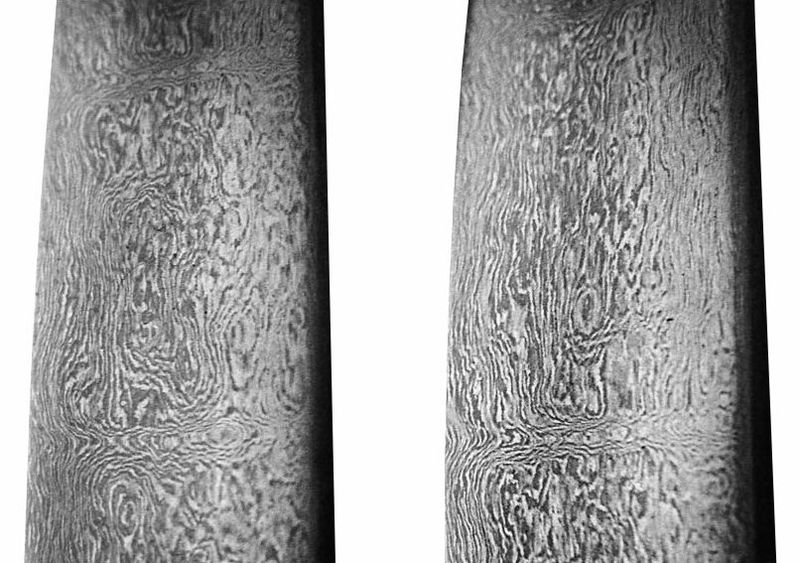A pioneering steel alloy matrix developed in India, Wootz steel is a crucible steel characterized by a pattern of bands that was known in the ancient world by many different names such as Ukku, Hindwani and Seric Iron. This steel was used to make the famed Damascus swords of yore that could cleave a free-falling silk scarf or a block of wood with the same ease. Produced by the Tamils of the Chera Dynasty, the finest steel of the ancient world was made by heating black magnetite ore in the presence of carbon in a sealed clay crucible kept inside a charcoal furnace.
Smelting of Zinc
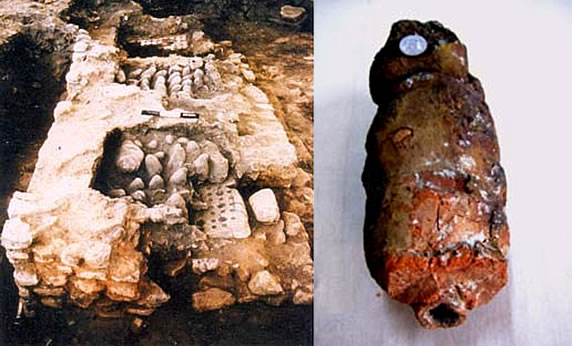India was the first to smelt zinc by the distillation process, an advanced technique derived from a long experience of ancient alchemy. The ancient Persians had also attempted to reduce zinc oxide in an open furnace but had failed. Zawar in the Tiri valley of Rajasthan is the world’s first known ancient zinc smelting site. The distillation technique of zinc production goes back to the 12th Century AD and is an important contribution of India to the world of science.
Seamless Metal Globe
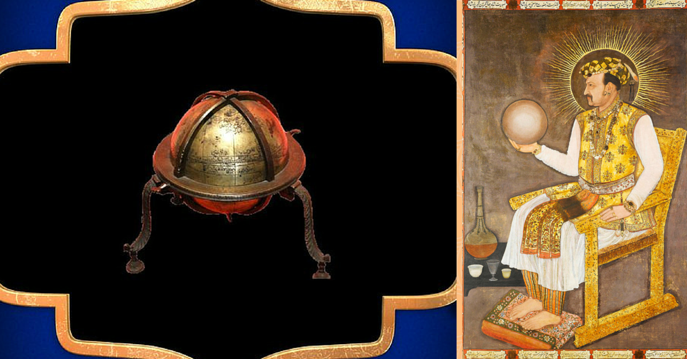Considered one of the most remarkable feats in metallurgy, the first seamless celestial globe was made in Kashmir by Ali Kashmiri ibn Luqman in the reign of the Emperor Akbar. In a major feat in metallurgy, Mughal metallurgists pioneered the method of lost-wax casting to make twenty other globe masterpieces in the reign of the Mughal Empire. Before these globes were rediscovered in the 1980s, modern metallurgists believed that it was technically impossible to produce metal globes without any seams, even with modern technology.
Plastic Surgery
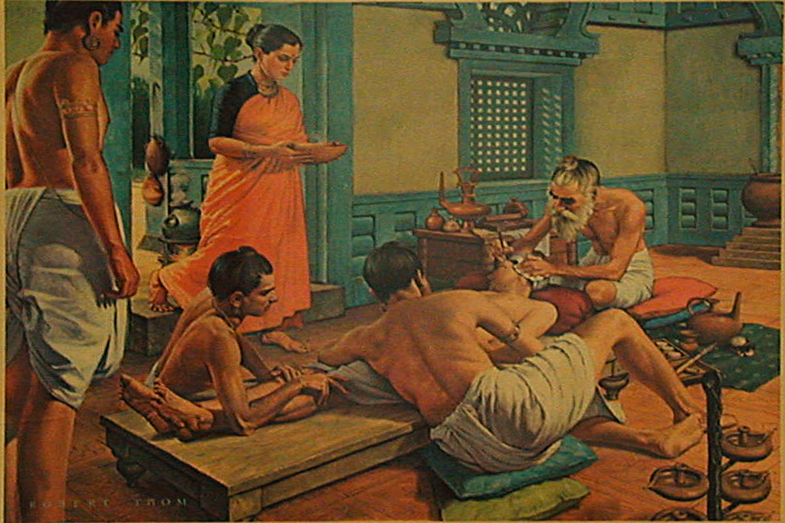Written by Sushruta in 6th Century BC, Sushruta Samhita is considered to be one of the most comprehensive textbooks on ancient surgery. The text mentions various illnesses, plants, preparations and cures along with complex techniques of plastic surgery. The Sushruta Samhita ’s most well-known contribution to plastic surgery is the reconstruction of the nose, known also as rhinoplasty.
Cataract Surgery
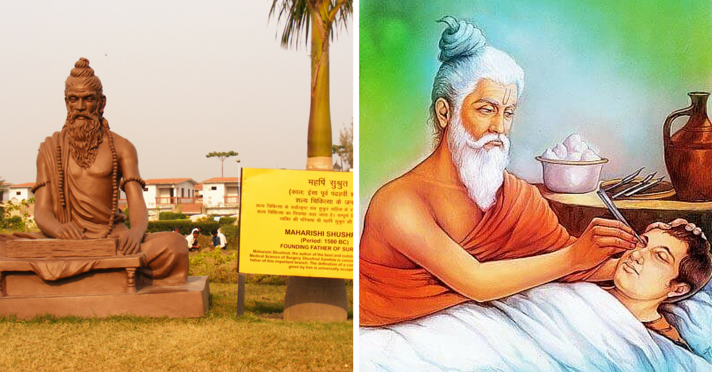The first cataract surgery is said to have been performed by the ancient Indian physician Sushruta, way back in 6th century BCE. To remove the cataract from the eyes, he used a curved needle, Jabamukhi Salaka, to loosen the lens and push the cataract out of the field of vision. The eye would then be bandaged for a few days till it healed completely. Sushruta’s surgical works were later translated to Arabic language and through the Arabs, his works were introduced to the West.
Ayurveda
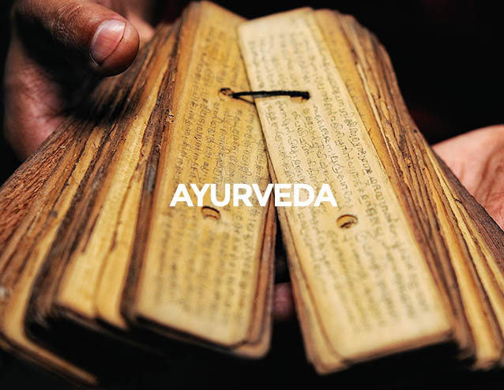ong before the birth of Hippocrates, Charaka authored a foundational text, Charakasamhita, on the ancient science of Ayurveda. Referred to as the Father of Indian Medicine, Charaka was was the first physician to present the concept of digestion, metabolism and immunity in his book. Charaka’s ancient manual on preventive medicine remained a standard work on the subject for two millennia and was translated into many foreign languages, including Arabic and Latin.
Iron-Cased Rockets
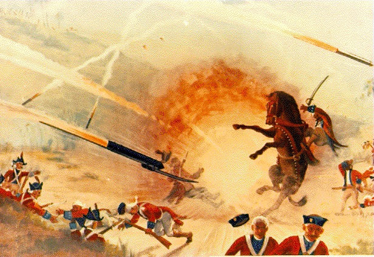The first iron-cased rockets were developed in the 1780s by Tipu Sultan of Mysore who successfully used these rockets against the larger forces of the British East India Company during the Anglo-Mysore Wars. He crafted long iron tubes, filled them with gunpowder and fastened them to bamboo poles to create the predecessor of the modern rocket. With a range of about 2 km, these rockets were the best in the world at that time and caused as much fear and confusion as damage. Due to them, the British suffered one of their worst ever defeats in India at the hands of Tipu.